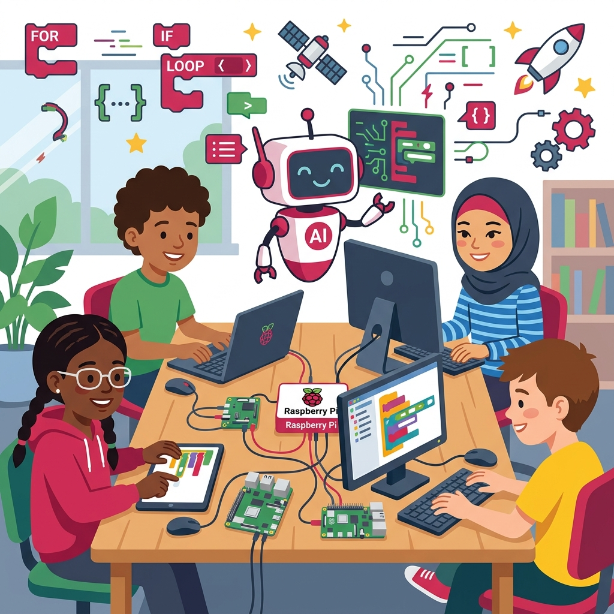

AI時代に子どもが
プログラミングを学ぶべき理由：
Raspberry Pi財団の提言


Hello World IkedaのKevinです！
近年、ChatGPTや生成AI（人工知能）の急速な進化にともない、「AIが自動でコードを書いてくれるなら、もう子どもたちがプログラミングを学ぶ必要はないのでは？」という疑問の声を聞くことが増えてきました。
しかし、教育用の小型コンピュータ「Raspberry Pi（ラズベリーパイ）」の開発やコンピューターサイエンス教育の推進で世界的に知られるRaspberry Pi財団は、この議論に対して明確な回答を示しています。
彼らは発表した意見書（ポジションペーパー）「Why kids still need to learn to code in the age of AI」の中で、「AI時代だからこそ、子どもたちがコーディングを学ぶ重要性はむしろ高まっている」と強く主張しています。
今回は、この提言をもとに、これからのAI時代を生きる子どもたちにとってプログラミング学習がなぜ不可欠なのか、5つの核心的な理由をわかりやすく解説します。
1. プログラミングは単なる「記述スキル」ではなく「デジタル・リテラシー」である
読み書き（リテラシー）が現代社会を生きるための基本であるのと同様に、プログラミングはデジタル社会の仕組みを理解し、主体的に生きるための「新しい読み書き能力」です。
コードを書くプロセスを通じて、子どもたちはテクノロジーが「魔法」ではなく「論理的に構築されたシステム」であることを学びます。これにより、単にテクノロジーを消費するだけの受動的なユーザーから、自らの手でソリューションを作り出す能動的なクリエイターへと成長することができます。
「子どもたちがデジタル社会で搾取や操作される側にならず、システムを理解して自分を守るためにも、この『デジタル自己防衛』としてのリテラシーは必須です。」
2. AIを正しく導き、評価するために「コードの知識」が不可欠
生成AIは確かにコードを出力してくれますが、常に完璧なコードを作成できるわけではありません。間違った指示を理解してしまったり、動作しない「バグ」を含んだコードや、セキュリティ上危険なコードを出力したりすることも多々あります。
AIが出力したコードの良し悪しを判断し、バグを発見して修正（デバッグ）し、実際に使える形に組み立てるには、人間側にプログラミング言語の動作ロジックやアーキテクチャの知識が絶対に必要です。AIを正しく「プログラミング」し、評価するためにも、人間自身のコーディングスキルが必要不可欠なのです。
3. 人間の論理的思考とシステム設計力は今後も必要とされる
コーディング作業の一部はAIに委ねられるようになるかもしれませんが、プログラム全体の設計図（アーキテクチャ）を描くことや、複雑な問題を細かく分析して手順を組み立てる（アルゴリズム的思考）ことは、依然として人間にしかできない高度な思考プロセスです。
プログラミングを学ぶことは、これらの論理的思考力、問題解決力、創造力を養う最高のトレーニングです。コードを書くこと自体が、脳の思考力を鍛える手段なのです。
4. あらゆる業界で求められる「ハイブリッドなキャリア機会」
プログラミングは、IT業界やソフトウェアエンジニアだけのものではなくなっています。医療、農業、アート、ビジネス、科学など、あらゆる分野でAIやデータ分析を活用する時代が到来しています。
自分の得意な専門分野に加え、プログラミングやテクノロジーの基礎を理解している「ハイブリッドな人材」は、あらゆる産業でイノベーションを主導できる大きな武器を持ちます。子どもの将来の選択肢を大きく広げることにつながります。
5. デジタル社会の主体性（エージェンシー）と包摂性（インクルージョン）
もしテクノロジーの仕組みを理解し、それを作り出す技術を持つのが一部の巨大テック企業や少数のエリート層だけに偏ってしまったら、作られるデジタルサービスも偏ったものになってしまいます。
あらゆる子どもたちがプログラミングを学ぶチャンスを得ることは、多様な視点や倫理的価値観が未来のAIやテクノロジーに反映されるために必要不可欠です。次世代全員がテクノロジーの主役になれる環境を整えることが、社会の公平性やインクルージョンを保つ鍵となります。
まとめ：AI時代だからこそ、本質を学ぼう
AIの進化はプログラミングを不要にするのではなく、むしろ「人間がよりクリエイティブで論理的な問題解決に集中できる環境」を作ってくれます。その新しい時代で主導権を握るために、子どもの頃からコーディングの基礎と仕組みを学ぶことの重要性は、これまで以上に高まっています。
Raspberry Pi財団が主張するように、「AIの時代だからこそ、コンピューティング教育を縮小するのではなく、さらに拡大・強化すべき」なのです。
Hello World Ikedaでは、英語とプログラミングを基礎から楽しく学び、これからのグローバル＆AI時代に羽ばたく力を身につけるレッスンを提供しています。ぜひ、無料体験レッスンでお子様のクリエイティビティの扉を開いてみてください！
英語とプログラミングを一緒に学ぼう
Hello World Ikedaでは、随時無料体験レッスンを受け付けています。